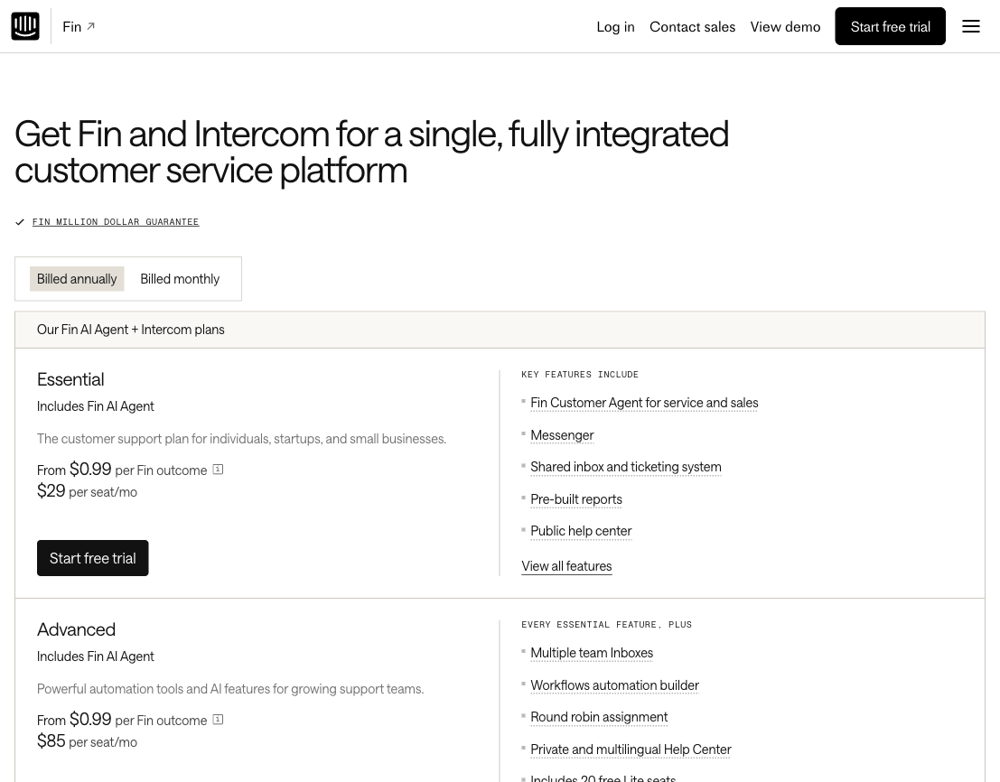

Case Claim
Intercom is interesting because it separates human support capacity from AI outcome capture instead of hiding automation inside one seat price.
Paid full seats unlock the helpdesk plan level.
AI spend rises when Fin resolves or completes a configured handoff.
The second meter must feel fair enough to defend internally.
Pricing Architecture
The architecture has two visible layers: a plan-seat layer for the customer service suite and a usage layer for Fin.
Customer Service Suite tiers
Role and usage segmentation
Paid teammate access to the selected plan.
Free collaboration seats included on higher tiers.
Usage event priced from $0.99 per outcome across plans.
Existing-helpdesk buyers can buy Fin without Intercom seats.

The useful pattern is the separation: plan prices explain human-team access, while the Fin line explains usage-based AI capture.
Pricing Mechanism
The key variable is not message volume, access to AI, or total conversations. The key variable is a billable Fin outcome.
Team size, governance, and operating depth.
Resolutions or configured Procedure handoffs.
The buyer pays for both the support system and AI-delivered completion.
Target Buyer Logic
They already budget by teammate capacity, so the seat layer feels familiar.
Fin can increase throughput without forcing a matching increase in full seats.
The $0.99 event is easier to accept when it replaces expensive human handling.
Decision Friction
Buyers must estimate how many conversations Fin will resolve or hand off through configured Procedures.
"Outcome" is simple at headline level, but procurement still needs to understand what counts.
Usage alerts and limits exist, but Intercom notes hard limits may not stop at an exact outcome count.
Admins still have to decide who needs a paid full seat versus lighter collaboration access.
Risk & Exposure
Fin can create trust, routing, and deflection benefits before every interaction becomes billable.
Seat planning and outcome governance have to be explained together.
Customers may tune Procedures, handoffs, and Fin deployment to manage billable outcome volume.
Structural Weakness
The weak point is that "outcome" sounds like a resolved customer problem, but the commercial boundary also includes configured Procedure handoffs.
Strategic Insight
Hybrid pricing works when each layer maps to a different buyer question: who needs the operating system, and how much valuable work does automation complete?